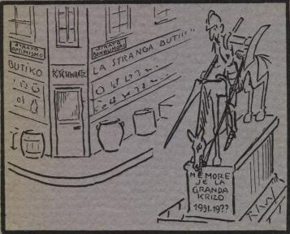
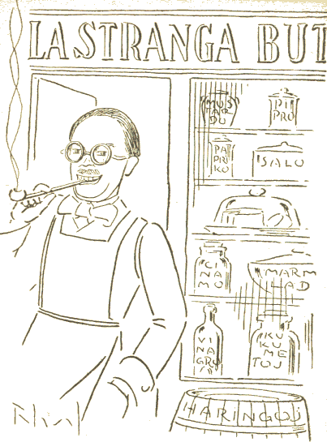

Paris Esperantista Presejo, 9, Rue Hallé, 9 1931
Goethe
Alia aŭtoro

Telegramadreso: Strabu
Parizo, dum Decembro
de l' krizjaro 1931.
Al mia tre ŝatata klientaro!
Mi havas la honoron informi vin, ke ĵus mi malfermis butikon ĉe angulo de la stratoj Optimismo kaj Bonhumoro, kontraŭ la konata statuo de la Granda Krizo.
Tie mi pacience atendas vian viziton.
Tie vi havos la okazon konvinkiĝi pri la alta kvalito de freŝaj varoj kaj pri la modereco de l' prezoj. Tie vi povos admiri la plaĉajn bildojn, desegnitajn speciale por vi sur pakpapero, de mia bona amiko, la jama artisto Raymond Laval.
La firmo liveros rapide ĉiujn deziratajn artiklojn krom sentimentala butero, flatpomado, ricin- aŭ gad-oleo, kies provizo jam antaŭ longe elĉerpiĝis.
Esperante viajn baldaŭajn mendojn, mi restas serveme-verseme Raymond Schwartz, Butikisto.
Post apero de ĉiu verko mia, mi ricevas senmanke kritikan leteron, subskribitan X. Tiu letero, ĉiam sincera, nepedanta, venas ― se mi povas fidi al la poŝtstampo ― el Annecy (Francujo). Ĝi entenas multajn utilajn rimarkojn kaj saĝajn konsilojn, kaj ĝin mi ĉiam legas kun granda intereso. Tial mi deziras esprimi ĉi tie, ne povante fari tion alimaniere, mian koran dankon al la anonima kritikanto, al mia fidela nekonata kliento.
R. S.